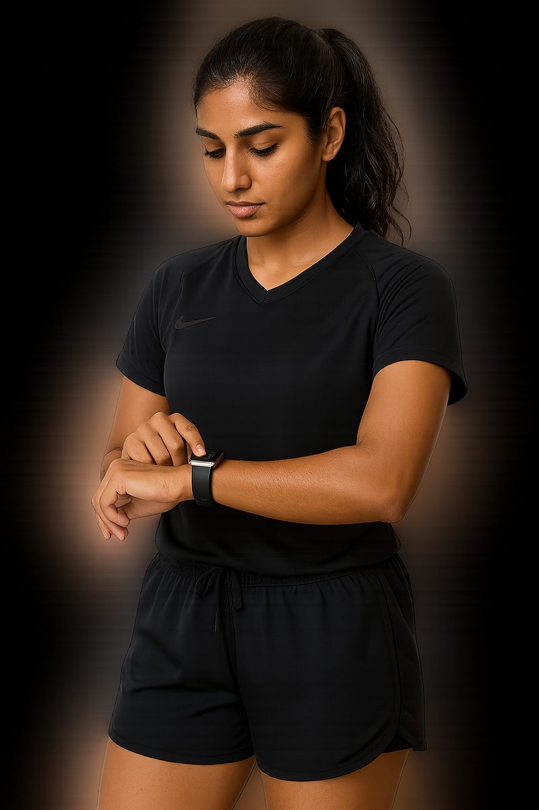

After her Sunday football match, Anya forgot to end her workout on her Apple Watch as she grabbed a ride home with a teammate.
By the time she checked her stats, her watch thought she’d sprinted another 8 kilometres in 12 minutes. Her heart rate barely moved, but her pace was Olympic-level.
With the Trim feature, she quickly removed the extra data, just like trimming a video, so only her time on the pitch counted.
